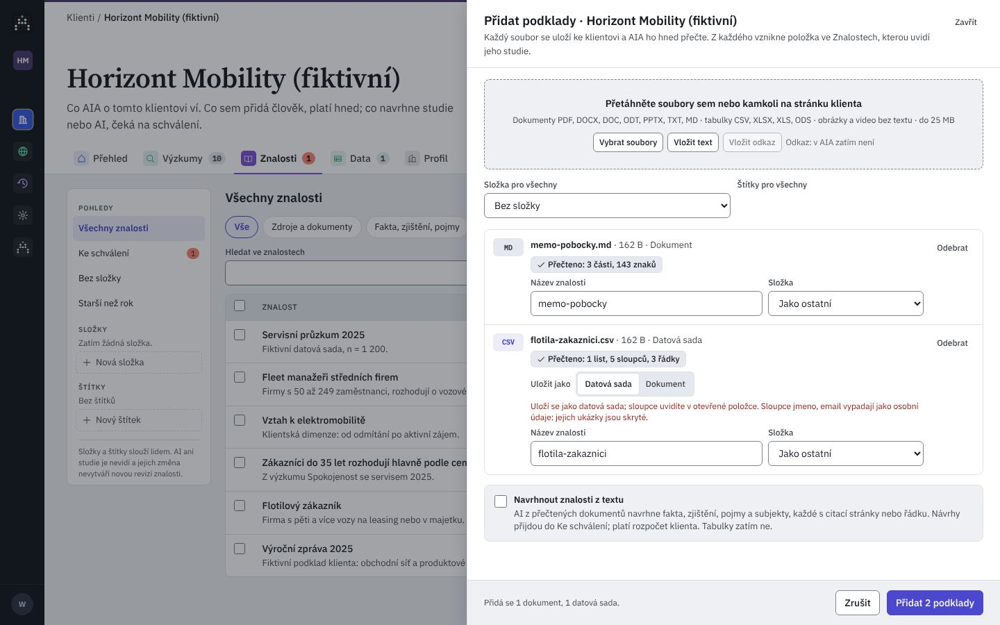

Pivovar Zlatá Hora (fiktivní)
AktivníRodinný pivovar z Vysočiny: tři ležáky a nealko. Výzkum potřebuje k rozhodování o ceně a komunikaci.O klientovi
Znalosti klienta ve složkách, jak je znáte z Disku.
Rodinný pivovar z Vysočiny: tři ležáky a nealko. Výzkum potřebuje k rozhodování o ceně a komunikaci.O klientovi
Znalosti klienta ve složkách, jak je znáte z Disku.
Znalosti klienta / Trh a konkurence / Ceny 2026 · otevřená složka; sem sešit uloží, pokud nevyberete jinou.
Každý soubor se uloží ke klientovi a AIA ho hned přečte. Z každého vznikne položka ve Znalostech, kterou uvidí jeho studie.
Tento soubor už klient má: nahrán před 2 h jako brand_tracking_2025.xlsx v Brand tracking. Použije se uložený; nevznikne druhý.
{{r.tableNote}}
Sloupce jmeno a email vypadají jako osobní údaje: jejich ukázky AIA skryje.
Jediná cesta souborů ke klientovi, z každé oblasti nebo puštěním na stránku. Dnes funkčně silný, ale barví typy souborů stavovými barvami, poznámku k tabulce korálem, štítek přidá výběrem ze seznamu a cílová složka je plochý seznam. Kód develop @ a1a9a45c; C/ = …/components/aia/clients/, L/ = apps/web/src/lib/.
